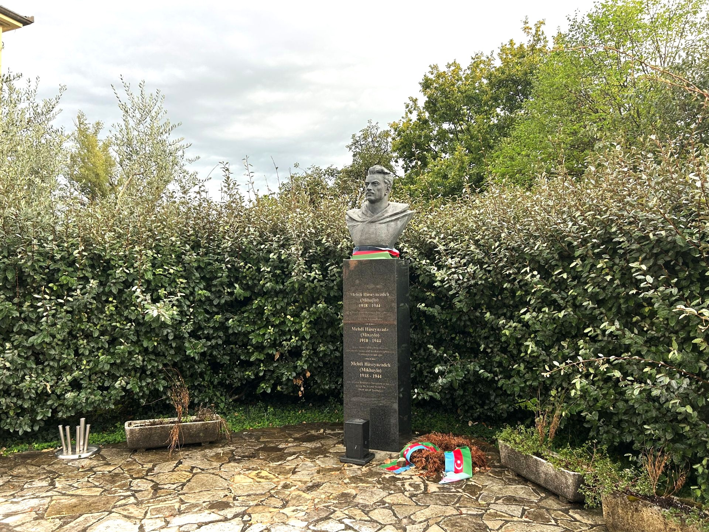

Znamenitost
Ena izmed zanimivih znamenitosti Šempasa je kip Azerbajdžanca. Kip je nekoliko nenavaden in zato hitro pritegne pozornost obiskovalcev. Predstavlja poseben del kraja in je zanimiv tudi zato, ker ima bogato zgodovinsko dediščino.